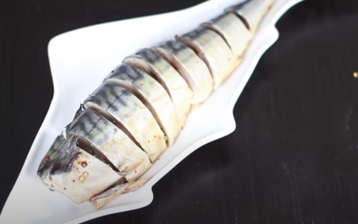
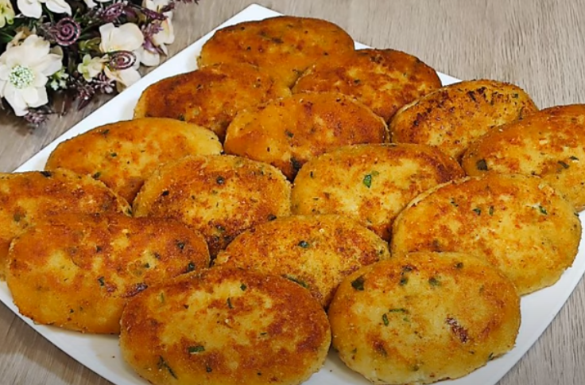
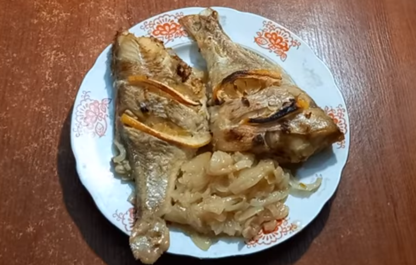
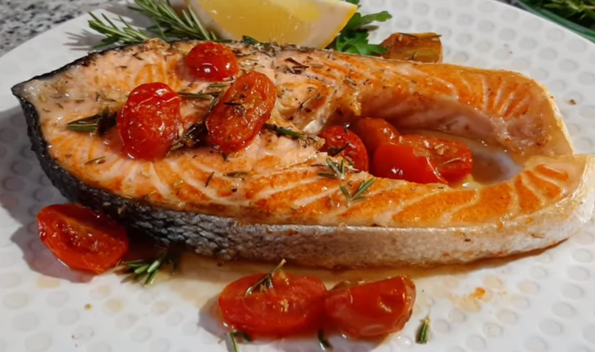
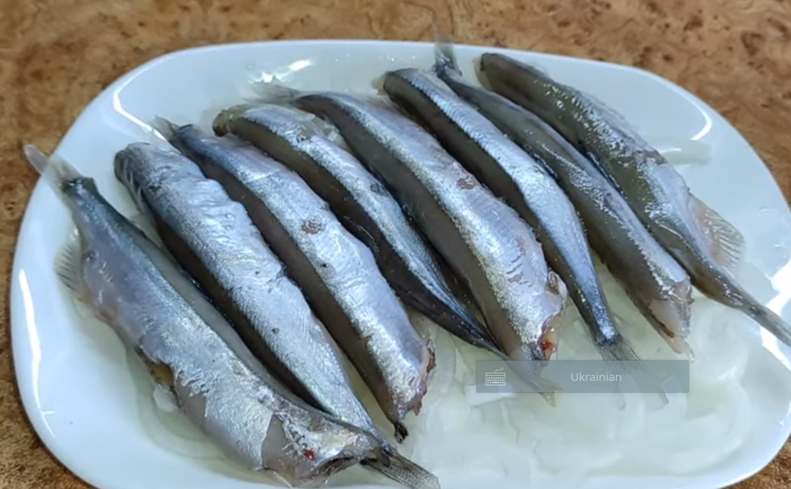
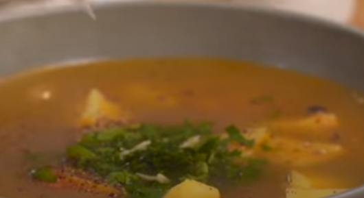
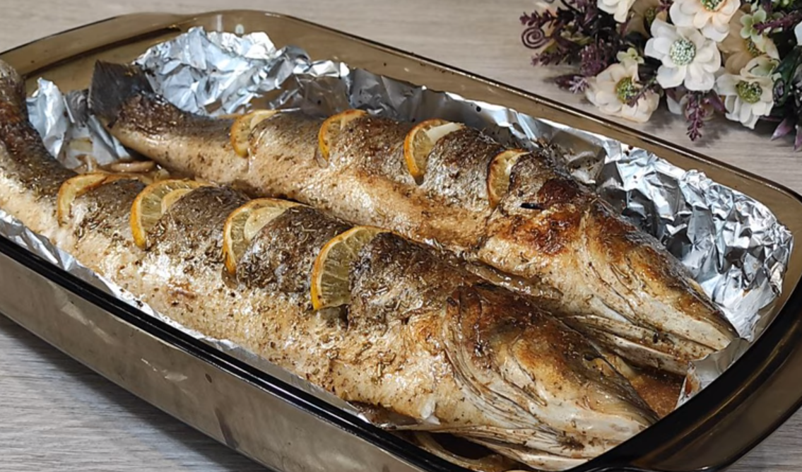

Рецепти з риби
Повернутися назад
Форель річкова у вершковому часниковому соусі на сковороді

Маринована скумбрія

Рибні котлети

Морський окунь запечений

Стейк лосося на сковороді

Малосольна мойва

Юшка з риби

Риба сібас запечена в духовці